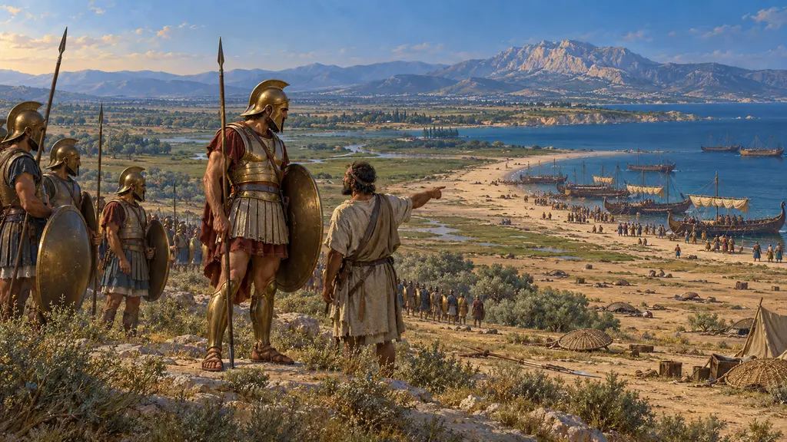
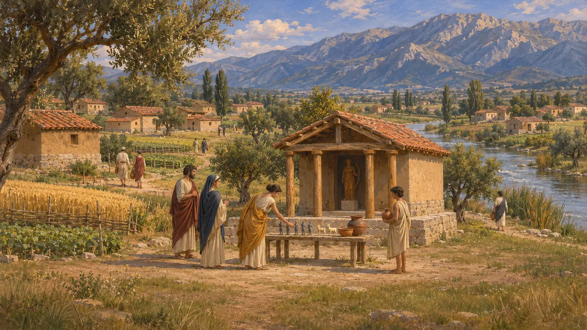
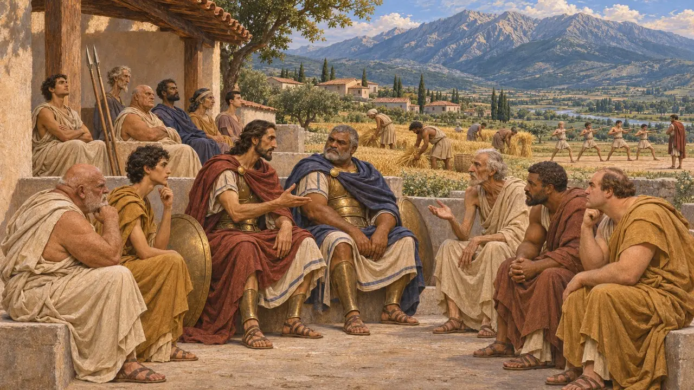
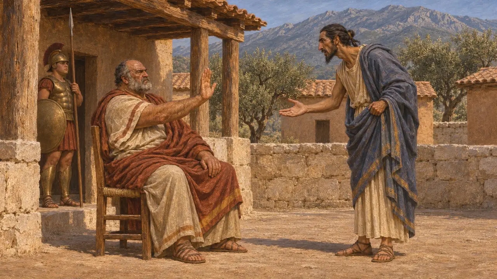
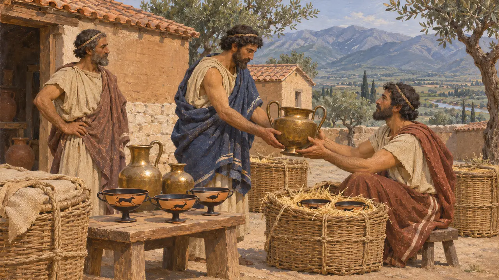
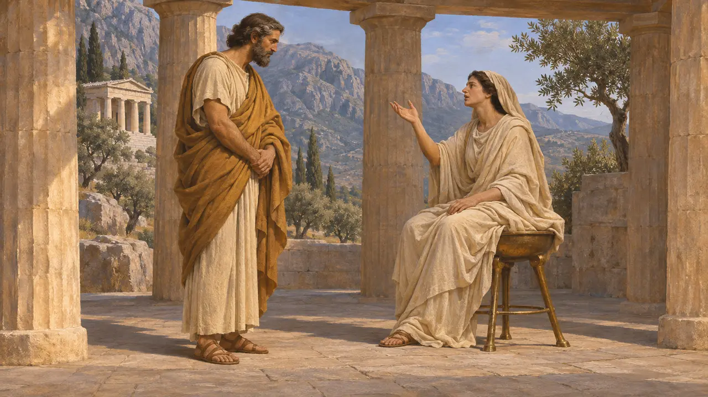

斯巴达是伯罗奔尼撒南部拉科尼亚的首要城邦。它由两位国王统治，依靠希洛人的劳作为生。在波斯时代，它领导着希腊诸邦中最强大的同盟，拒绝了国王的要求，并为温泉关和普拉提亚的希腊抵抗军提供了统帅。
游戏中： 游戏将斯巴达列为贸易伙伴。这是一种简化：没有任何史料表明斯巴达与波斯有经常性的贸易往来，而在公元前480—479年，斯巴达正是领导希腊人对抗国王的城邦。

欧罗塔斯河畔的村落
见于史载斯巴达位于欧罗塔斯河谷，由一群村落组成，没有城墙。英国雅典学院在阿尔忒弥斯·奥尔提亚圣所的发掘中，出土了数以千计作为祭品留下的小型铅制人像、象牙雕件和拉科尼亚陶器残片。如今遗址上留存的这一时期纪念性建筑寥寥无几。
R. M. Dawkins, The Sanctuary of Artemis Orthia at Sparta, 1929

国王、监察官与黑劳士
古代记述希罗多德与色诺芬笔下的斯巴达，有出自阿吉亚德家族与欧里庞提德家族的两位世袭国王、每年选出的五名监察官，以及一个长老议事会。公民男子称为斯巴达人，自幼习武，靠希洛人耕种的份地为生；希洛人是拉科尼亚与美塞尼亚的被征服居民。约至公元前500年，斯巴达已借由一系列同盟领导伯罗奔尼撒的大部分地区。
Herodotus 6.56-58; Xenophon, Constitution of the Lacedaemonians

使节与回绝
古代记述据希罗多德记载，萨第斯陷落后，斯巴达派传令官警告居鲁士不得侵犯亚细亚的希腊城邦，居鲁士却问斯巴达人是何许人也。约公元前499年，克列欧美涅斯王得知苏萨距海岸有三个月的行程后，便回绝了米利都的阿里斯塔哥拉斯。希罗多德还说，斯巴达人曾把大流士的传令官扔进井里；公元前490年，他们的军队直到战斗结束后才抵达马拉松。
Herodotus 1.152-153; 5.49-51; 7.133; 6.106; 6.120

斯巴达究竟有多开放
争夺中后世作家把斯巴达描绘成一个封闭而简朴的城邦：以铁条代替白银，并驱逐外邦人。史家称这种形象为“斯巴达幻象”，并争论它在多大程度上符合公元前6世纪的实情——那时拉科尼亚的陶器和青铜器远销萨摩斯、伊特鲁里亚和昔兰尼。希罗多德说斯巴达曾与吕底亚的克罗伊斯结盟，但没有任何史料表明它与波斯帝国有过经常性的贸易往来。
F. Ollier, Le mirage spartiate, 1933; P. Cartledge, Sparta and Lakonia, 1979; Herodotus 1.69

立法者吕库古
后世传说斯巴达人将他们的生活方式归功于一位立法者——吕库古。有些说法称他的法律得自德尔斐神谕。希罗多德已记载了这个故事，后来普鲁塔克又为他写了一部完整的传记，但古代作家对他生活的年代莫衷一是。如今大多数史家将他视为传说人物，而非确知的历史人物。
Herodotus 1.65; Plutarch, Lycurgus
来源
- Herodotus, Histories
- Xenophon, Constitution of the Lacedaemonians
- P. Cartledge, Sparta and Lakonia, 1979
- R. M. Dawkins, The Sanctuary of Artemis Orthia at Sparta, 1929
- F. Ollier, Le mirage spartiate, 1933
- Plutarch, Lycurgus